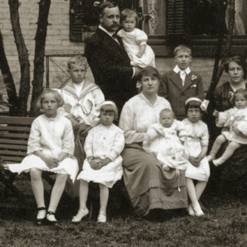
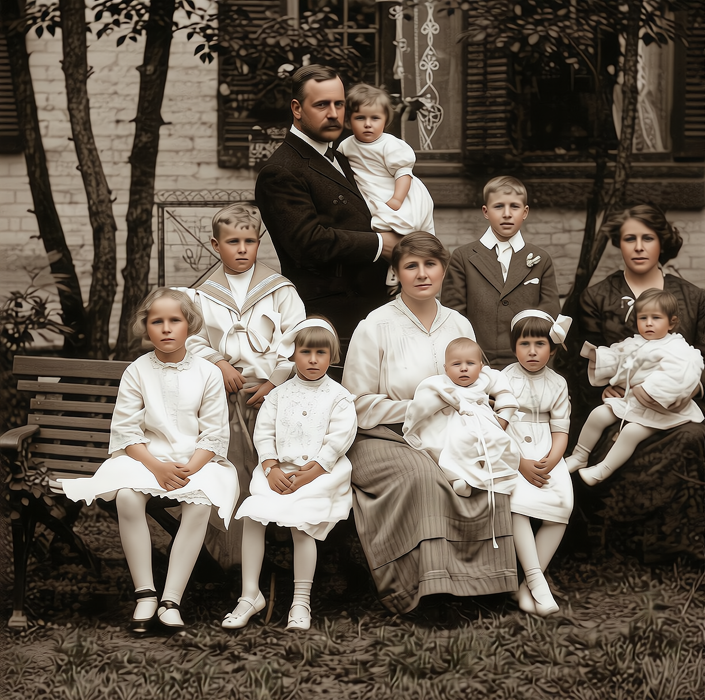

Un ingénieur, une famille nombreuse
Jules-Alexandre Duchastel de Montrouge naît le 1er septembre 1878 à New York, fils du consul Léon-Hilaire-Alexandre Duchastel et d'Anita Snyder. Diplômé de l'École Polytechnique de Montréal en 1901, il devient ingénieur administrateur à la Ville d'Outremont de 1906 à 1924, contribuant notamment au tracement des rues et à l'implantation des parcs de la jeune municipalité. Il sert aussi comme major dans l'armée canadienne durant la Première Guerre mondiale.
Le 25 octobre 1904, à Montréal, il épouse Jeanne Lacoste. Le couple s'installe à Outremont, où naissent leurs sept enfants entre 1905 et 1915. Jules-Alexandre meurt le 20 février 1938 à Montréal; il est inhumé avec son épouse au cimetière Notre-Dame-des-Neiges.


Sept enfants
Léon-Alexandre Gén. X
1905–1962. Ingénieur civil, diplômé de Polytechnique (1927); major, régiment de Maisonneuve. Marié en 1933 à Yvette Beauchamp — poursuit la lignée baronniale.
Renée
1906–1999. Mariée à Joseph de La Durantaye.
Jean-Lucien
1908–1983. Marié en Angleterre à Nora Edma Day; quatre enfants (Paul, Philippe, André, Jeanne), avec descendance au Québec, aux États-Unis et en Angleterre.
Louise
Née en 1909. Mariée à Albert Charles Fleishmann; trois enfants (Jacques-Alexandre, Jean, Louise).
Marguerite
1912–2004. Mariée à François Bisaillon; trois enfants (Guy, Jacques, Lynne).
Paule
1914–1989. Mariée à Clément Charest; quatre enfants (Michel, Renée, Andrée, Denis) — fonde la branche cousine Charest-Sébastien à Outremont.
Pierre-Arthur
1915–1991. Ingénieur en électricité (McGill), marié à Phyllis Anna McKenna; cinq enfants (Anita, Pierre, Lynne, Thomas, Jacques-Alexandre).